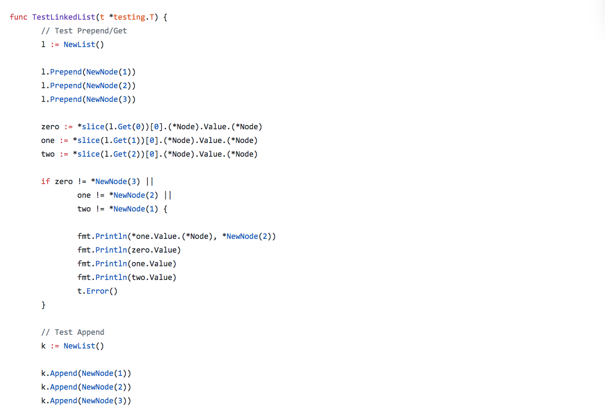
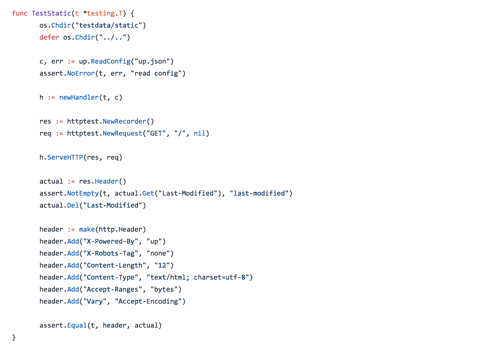
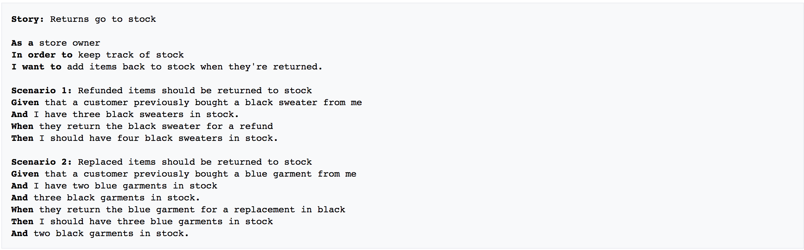
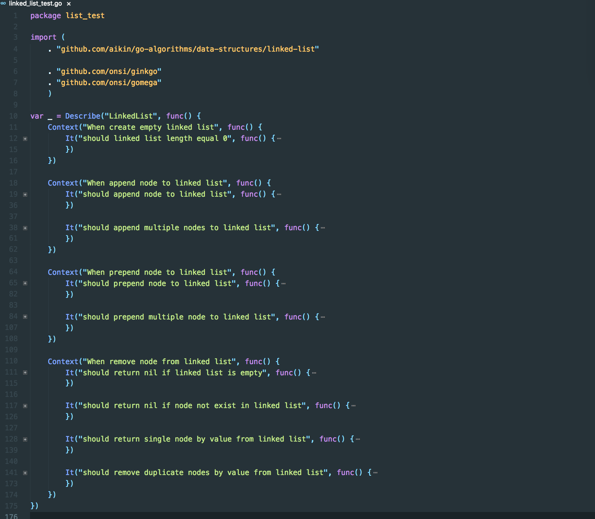
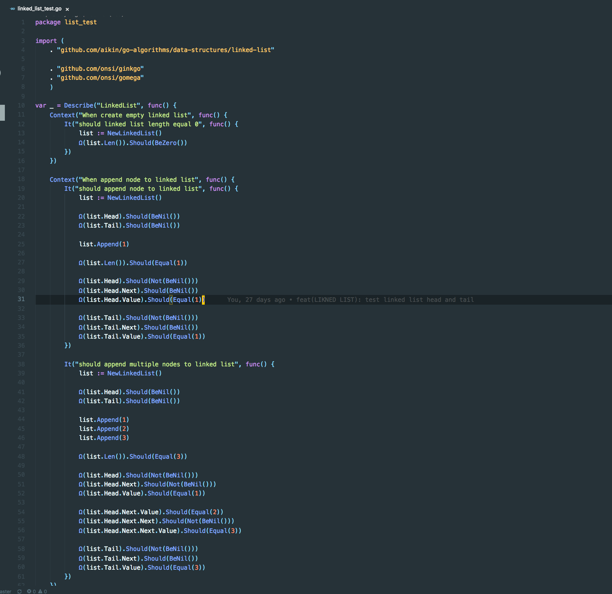
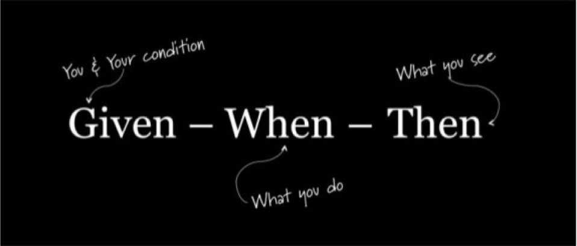

最近在学习Go。然后不禁想感叹，为什么有些小伙伴的Go测试可读性可以这么怪(cha)。说好的测试即文档呢？说好的测试边界呢？说好的Given When Then呢？是我功力不行吗？
我一直相信，编程思想或说方法论都属于可迁移的知识，不管在哪种语言体内。可是看完一些 Go 的测试栗子，我开始慌了~
不信？看官请看：

由于测试用例太长，没法截全。没错，太长，一屏都装不下。好奇的你，请戳 ->>> 戳我
不知道你品起来如何，反正我品起来着实有点苦涩。
这样的栗子，在awesome-go列表的开源库，还不少。不行，不行，不能被带歪了(PS: GitHub 的确是全球最大的基友社区啊，容易带歪人，hahaha)。
插播一条：多品整洁，简单的代码，有利于保护发际线。
当然不能“一棒子打死船人”，要有发现美的眼睛。看官请看：

这是大神TJ Holowaychuk写的，果然不同凡响。好奇的你，请戳 ->>> 戳我
满足什么条件的测试，是值得品味的？我觉得，第一是可读性，第二还是可读性，第三还是可读性。
常听说 测试即文档，那么问题来了，好读的文档，长啥样？读小学的时候，老师就有教导说，写作文要，结构清晰，中心思想突出!!!
写测试代码也是如此，要写出她（计算机）能理解的“文章”，也要写出我们能品的“文章”。那么，落地BDD 模式的测试，无疑是种好的选择。
看官请看：

中心思想突出，结构清晰。开头先描述主要功能，然后根据不同用例场景分别对待描述。
落地的栗子：

有木有看起来很舒服！！！你是不是在想，测试实现代码呢？看官您接着看：

完整栗子，好奇的你，请戳 ->>> 戳我
上面的栗子，落地就是测试三段式，GIVE-WHEN-THEN：

- Given: set up context for a behaviour
- When: specify some action
- Then: specify some outcome
Action + Outcome = Behaviour，行为是测试关注的核心。Given，测试用例业务场景的准备，主要包含准备业务数据、Mock 外部依赖、准备用户信息。 随着业务的越复杂，测试上下文的准备也会越来与复杂，准备业务数据的过程也会越来越耗时间。举个栗子，对于API测试来说，相对需要花时间写的就是Given的过程。Then，主要是写断言，Assert一下API的返回数据，When，触发的动作，就是简单的发一下请求，调用一下API。
写在最后
咖啡喝完了，接下不知道怎么写了…